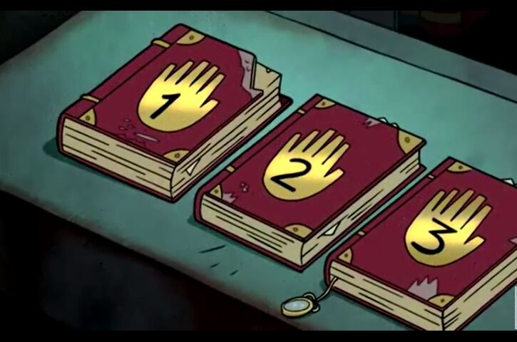

Gravity Falls: Un viaje al Raromagedón
Rescata a Gravity Falls del caos apocalíptico
Explora el universo de Gravity Falls en esta emocionante aventura gráfica interactiva. Únete a Dipper en su misión de salvar al pueblo de una amenaza sobrenatural, recolecta objetos claves y toma decisiones que determinarán el destino de los personajes y del pueblo.
Inspiración en la serie original
El Raromagedón
El Caos del Raromagedón: "Nuestro juego recrea el ambiente apocalíptico del Raromagedón, donde Gravity Falls está al borde del colapso. Desde cielos ardientes hasta paisajes deformados, todo en el juego evoca el caos visual y emocional de esta saga épica de la serie."
Bill como la Gran Amenaza
El carismático y peligroso Bill Cipher regresa como el antagonista principal. Su personalidad impredecible y su naturaleza burlona inspiran los desafíos del juego, donde lanza láseres y pone trampas para detener a Dipper.

Referencias al Diario
Los secretos del Diario juegan un rol fundamental en la narrativa del juego, al igual que en la serie. Resolver los misterios escondidos en los objetos recolectados y seguir las pistas es clave para desentrañar la trama.

El detrás de la aventura
Concepto inicial:
Inspiración:
Gravity Falls no solo inspiró la narrativa y los personajes del juego, sino que también nos motivó a explorar la interacción entre el misterio, el caos y la diversión. Creemos que el espíritu de la serie, con su mezcla única de aventura, humor y oscuridad, se ve reflejado en cada aspecto del juego, ofreciendo a los jugadores una experiencia llena de sorpresas y emoción.
Objetivo:
Crear una experiencia interactiva que capture la esencia de la serie.
Desarrollo del videojuego:
Herramientas utilizadas:
p5.js para el desarrollo del juego, diseño de personajes, y creación de pantallas.
Desafíos: Crear una narrativa coherente y atractiva con finales múltiples.
Tratamiento artístico:
Para diseño visual nos basamos en el estilo gráfico de Gravity Falls, con colores vibrantes y texturas misteriosas.
Diseño gráfico:
Elección de la tipografía:
Creepster: Tiene un diseño espeluznante y misterioso, perfecto para temas de suspenso y terror.
Press Start 2P: Es una fuente pixelada inspirada en videojuegos retro, ideal para reforzar el aspecto interactivo del proyecto.
Special Elite: Simula la escritura de una máquina de escribir antigua, ideal para un look de "diario" o "misterio".
Orbitron: Tiene un diseño futurista y oscuro.
Conocenos!!
Integrantes:
Tenutto Lucila: Es de Lobos, tiene 21 años, su pasatiempo favorito es mirar series de fantasia, en especial de vampiros. Es súper familiera.
Gonzalez Victoria: Tiene 22 años, es de La Plata, y cuando no esta programando le gusta bailar y dibujar en digital o editar. Su color favorito es el violeta.